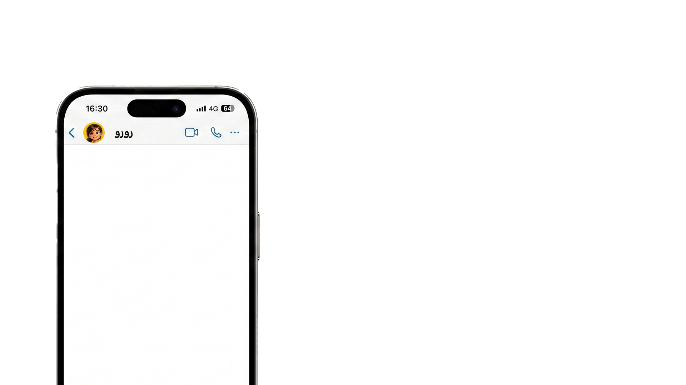
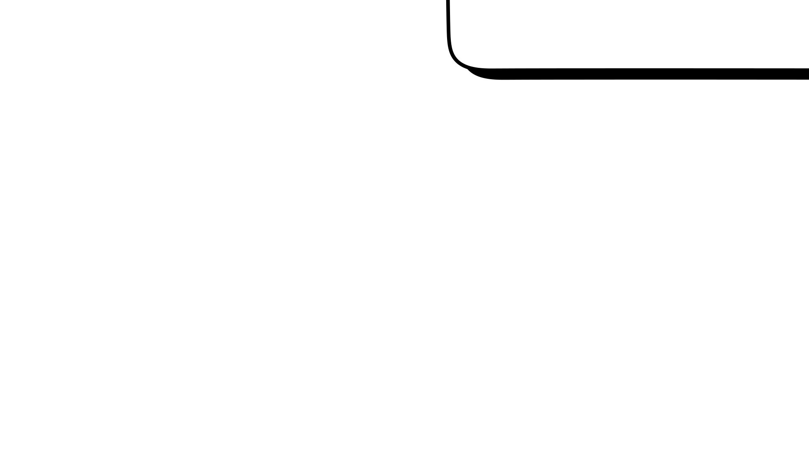
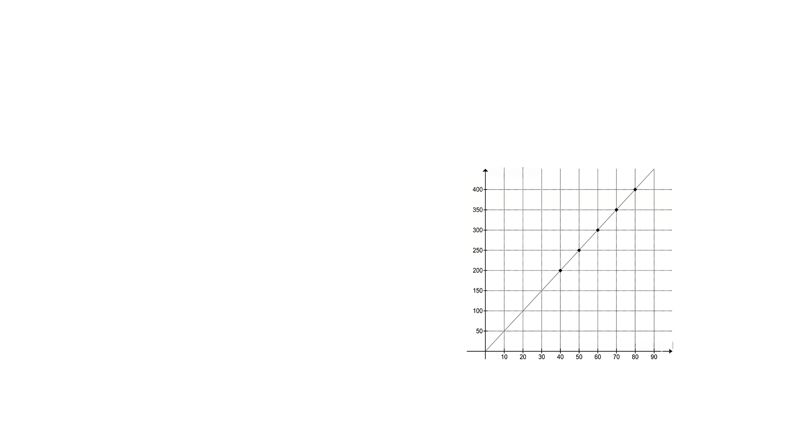
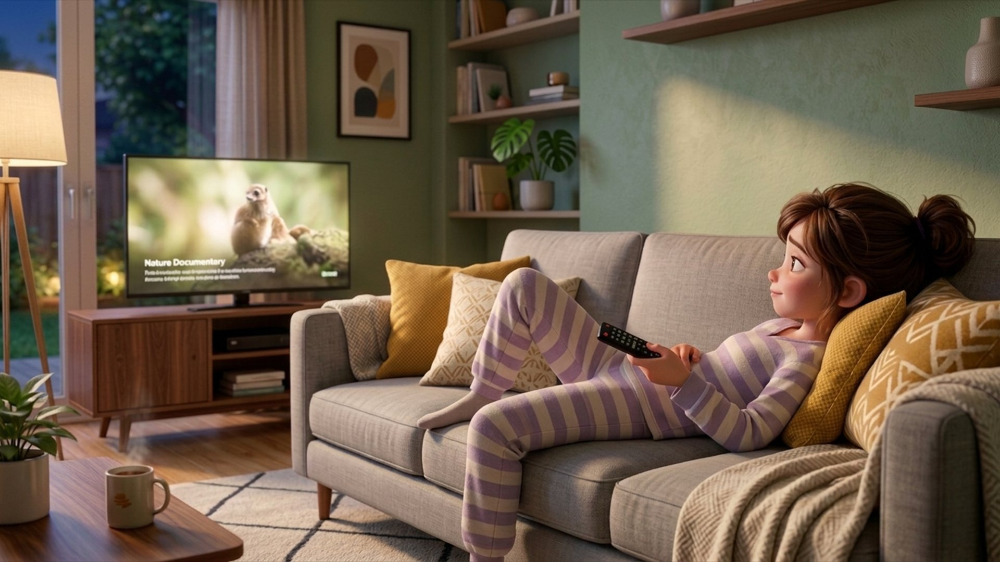

נועה לומדת בכיתה ח׳ בבית הספר.
בכל יום חול, אחרי שהיא חוזרת הביתה, יש לה בערך 5 שעות פנויות (שהן 300 דקות),
והיא מנצלת אותן בעיקר לפעילות אחת ספציפית…
רגע לפני שסגרה את הטלפון, היא נתקלה בסרטון חדש של אלכס, יוצרת התוכן האהובה עליה.
אלכס היא תלמידת תיכון שמשתפת סרטונים מהחיים שלה.
לחצו על הסרטון כדי לצפות בו.

1. א. נועה מחליטה לבנות לעצמה יישומון פשוט לניהול הזמן.
פתחו את היישומון ועזרו לנועה לחשב את הזמנים שלה במצבים שונים.
התחילו בבדיקה של ימים שבהם יש לה פחות זמן פנוי,
ונסו לפחות שני מצבים:
כאשר יש לה 200 דקות וכאשר יש לה 260 דקות של זמן פנוי.
בדקו איך זה משפיע על התכנון שלה.
כלי לניהול הזמן
1. ב. ברוב הימים, לנועה יש 300 דקות פנויות ביום, והיא רוצה לנצל אותן היטב. כדי לדייק בזמנים, היא מכוונת לה טיימרים.
הקלידו את מספר הדקות המתאים בכל טיימר:
2. כמה דקות נמשך כל פרק בסדרה?
הקלידו את מספר הדקות המתאים בטיימר:
חלק מזמן המסך שהקציבה לעצמה, נועה רוצה להקדיש לצפייה
בסדרה האהובה עליה, ואת השאר – לגלישה חופשית באינטרנט.
כל פרק בסדרה אורך כ-40% מזמן המסך שלה.
105 דקות של זמן מסך:
 40%
השאר
40%
השאר
נועה התלהבה מהשיטה!
ולמרות שזה קצת חורג מזמן המסך שלה היום (לא נורא נועה, קורה לטובים ביותר!),
היא הייתה חייבת לשתף את חברה שלה, עופרי.

3. א. בהתחלה נועה כתבה לעופרי:
"כדי לדעת איזה אחוז מתוך הזמן הפנוי היומי (300 דקות)
מוקדש לסדרה האהובה עליי, אפשר פשוט לחשב
כמה הם 40% מתוך 35% ."
סמנו אם המשפט נכון או לא נכון:
נועה הסבירה לעופרי איך עובדת השיטה.
אבל לא כל ההסבר היה מדויק...
300 דקות:
3. ב. אח"כ נועה כתבה לעופרי:
"40% מתוך זמן המסך שלי שווים בדיוק 40% מכל הזמן הפנוי שלי."
סמנו אם המשפט נכון או לא נכון:
נועה הסבירה לעופרי איך עובדת השיטה.
אבל לא כל ההסבר היה מדויק...
300 דקות:

עברו כמה ימים והשיטה של נועה עבדה מעולה!
אבל אז הגיע יום חמישי, והיא כמעט שכחה…
4. לתור אצל הרופא (כולל ההליכה הלוך וחזור) נועה הקדישה כשעה וחצי, ולכן נשארו לה רק 210 דקות פנויות.
ובכל זאת, היא לא ויתרה על חדר הכושר.
איזה אחוז בערך מהזמן הפנוי של נועה באותו יום הוקדש לחדר הכושר (כולל ההליכה), אם זמן חדר הכושר הכולל היה כ-60 דקות?
סמנו את התשובה הנכונה:
עוד יום עבר ונועה התחילה להתרגל לשיטה, גם אם היה צריך להתגמש פה ושם.
עכשיו היא מתכוננת לקראת מבחן גדול וחשוב.
5. א. מה יהיה סה"כ הזמן הפנוי של נועה אם היא תקדיש 60 דקות
לאימון נטו, כשזמן חדר הכושר ברוטו (כולל 20 דקות הליכה לחדר הכושר)
יישאר 20% מתוך הזמן הפנוי?
היעזרו בגרף והקלידו את המספר החסר:
בגלל העומס בלימודים, נועה לא הספיקה להתאמן.
היא החליטה לבדוק מה יקרה ביום שבו היא תרצה להאריך
את האימון נטו לשעה שלמה (60 דקות).

זמן חדר הכושר ברוטו
(כולל הליכה הלוך חזור)
כל נקודה על הקו מייצגת זוג סדור שמתאים לשיטה:
כמה דקות מוקדשות לחדר הכושר (כולל 20 דקות הליכה),
ומהו הזמן הכולל שמתאים לכך.
5. ב. מה יהיה זמן האימון נטו של נועה
אם סה"כ הזמן הפנוי שיש לה הוא 350 דקות?
היעזרו בגרף והקלידו את המספר החסר:
בגלל העומס בלימודים, נועה לא הספיקה להתאמן.
היא החליטה לבדוק מה יקרה ביום שבו היא תרצה להאריך
את האימון נטו לשעה שלמה (60 דקות).
זמן חדר הכושר ברוטו
(כולל הליכה הלוך חזור)
5. ג. אילו נקודות מייצגות זוגות סדורים שבהם לנועה יש סה"כ זמן פנוי שלא משאיר לה כלל זמן לאימון?
לחצו על הנקודות המתאימות בגרף.
כל נקודה על הקו מייצגת זוג סדור שמתאים לשיטה:
כמה דקות מוקדשות לחדר הכושר (כולל 20 דקות הליכה),
ומהו הזמן הכולל שמתאים לכך.
זמן חדר הכושר ברוטו
(כולל הליכה הלוך חזור)

אחרי המבחן הגדול, נועה הרגישה שהיא צריכה קצת מנוחה.
6. יום אחרי המבחן הגדול, נועה החליטה להוסיף לעצמה עוד 20% זמן מסך מזמן המסך המקורי שלה, שהוא 105 דקות.
כמה זמן מסך יהיה לנועה באותו יום?
סמנו את התשובה הנכונה:
7. הגיע סוף השבוע והזמן הפנוי של נועה גדל.
נועה התלבטה בכמה להגדיל את זמן המסך שלה ועשתה כמה חישובים
ביישומון חדש שהיא בנתה לעצמה, המיועד לניהול הזמן שלה בסוף השבוע.
השתמשו ביישומון מימין ועזרו לנועה לבדוק מה יקרה לזמן המסך שלה אם הזמן הפנוי שלה יגדל ב-80% וב-20%.
אתגר סוף השבוע
8. באחד מסופי השבוע הזמן הפנוי של נועה גדל מ-300 דקות ל-360 דקות.
נועה מחליטה להגדיל בהתאם גם את זמן המסך שלה מ-105 דקות (ביום רגיל) ל-126 דקות.
השלימו את המסקנה המתמטית של נועה:
איזה קטע!
זה אומר שאם מגדילים את השלם ב-20%, וגם את החלק היחסי ב-20%, האחוז
נועה כבר מסתדרת מעולה עם הזמן שלה, גם בימים עמוסים!
אבל מה קורה כשהיא צריכה לשמור על אחותה הקטנה?
אהה, את זה היא כבר תחשב בפעם אחרת…